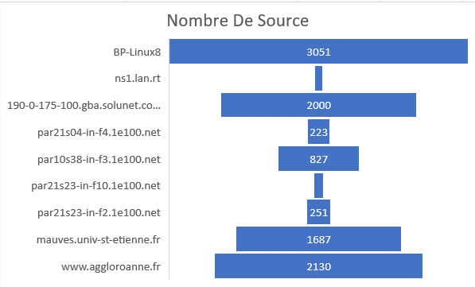
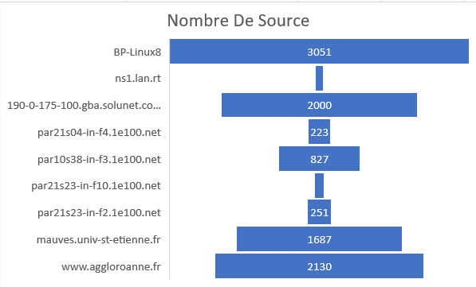

Voici deux graphique qui montre le nombre de fois qu'une addresse a envoyer des paquets
 

Voici deux graphique qui montre le nombre de fois qu'une addresse a recus des paquets

Voici un graphique qui permet le nombre de fois qu'a été
envoyer des paquets de différentes tailles
Quelle commande a permis d'obtenir ce fichier DumpFile ?
C'est la commande Tcpdump. Tcpdump est un utilitaire de ligne de commande qui vous permet de capturer et d’analyser le trafic réseau passant par votre système.
Il est capable de capturer et de décoder de nombreux protocoles différents, tels que TCP, UDP, ICMP et bien d’autres
Il est souvent utilisé pour aider à résoudre les problèmes de réseau, ainsi qu’un outil de sécurité.
Outil puissant et polyvalent comprenant de nombreuses options et plusieurs filtres, tcpdump peut être utilisé dans de nombreux cas. Comme il s’agit d’un outil en ligne de commande, il est idéal de l’exécuter sur des serveurs ou des périphériques distants pour lesquels aucune interface graphique n’est disponible, afin de collecter des données pouvant être analysées ultérieurement. Il peut également être lancé en arrière-plan ou sous forme d’une tâche planifié à l’aide d’un cron.